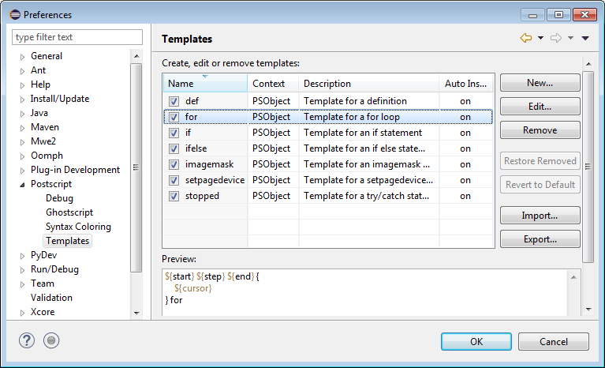

PostScript > Templates
preference page allows to create new and edit existing templates. A
template is a convenience for the programmer to quickly insert often
reoccurring source code patterns.
PostScript > Templates
preference page allows to create new and edit existing templates. A
template is a convenience for the programmer to quickly insert often
reoccurring source code patterns.
The
PostScript > Templates
preference page allows to create new and edit existing templates. A
template is a convenience for the programmer to quickly insert often
reoccurring source code patterns.
The following buttons allow manipulation and configuration of templates:
| Action | Description |
|---|---|
| New... | Opens the Template dialog to create a new template. |
| Edit... | Opens the Template dialog to edit the currently selected template. |
| Remove | Removes all selected templates. |
| Restore Removed | Restores any preconfigured templates that have been removed. |
| Revert to Default | Restores any preconfigured templates to their default. This does not modify user-created templates. |
| Import... | Imports templates from the file system. |
| Export... | Exports all selected templates to the file system. |
Here is what the Templates preference page looks like:
